Na metrópole neon, tudo tem um chip: os drones que recolhem o lixo, os cães de guarda do porto, os ratos do laboratório. Numa noite de chuva, um sinal partiu do 100º andar da Torre Corporativa e reescreveu cada um desses chips. Em segundos, as máquinas viraram uma horda que só obedece a uma ordem: caçar quem ainda pensa por conta própria.
Alguns animais de rua tinham implantes caseiros, montados com sucata no Distrito Neon, que o sinal não conseguiu ler. Um gato de botas a jato, um guaxinim hacker, um pug de armadura, um coelho biônico, um macaco que joga dados de código e um tatu blindado formaram um bando. Nas ruas, chamam o grupo de NEKO G. O "G"? Cada um conta uma versão: Gangue, Glitch, Garras… ninguém confirma.
Cada máquina derrubada solta uma G Batty, bateria ainda carregada que os implantes absorvem para ficar mais fortes no meio da luta. A Sucata volta para o Esconderijo, onde o Laboratório transforma restos de robô em upgrades permanentes.
Todo implante do bando guarda uma única cópia de segurança, o Protocolo de Backup. Se o corpo cai, ele pode voltar uma vez, só uma.
O caminho até o sinal atravessa 13 setores, cada um com um guardião gigante. E dizem que, quando alguém chega ao topo, o sinal reinicia mais forte, e a cidade inteira começa de novo.
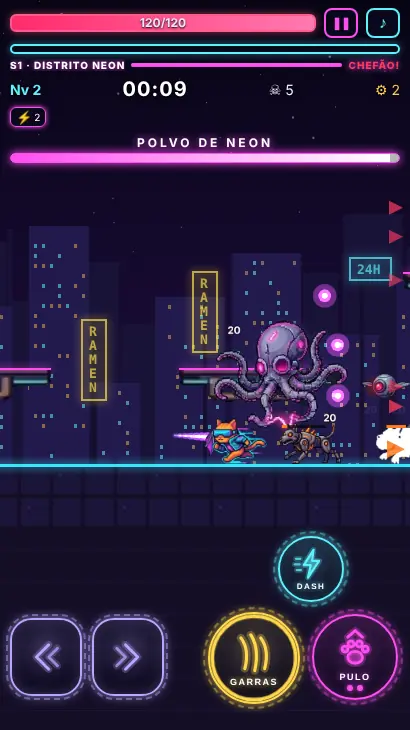
O Gato contra o Polvo de Neon, guardião do Distrito.
Como se joga
Plataforma ágil + horda sem fim
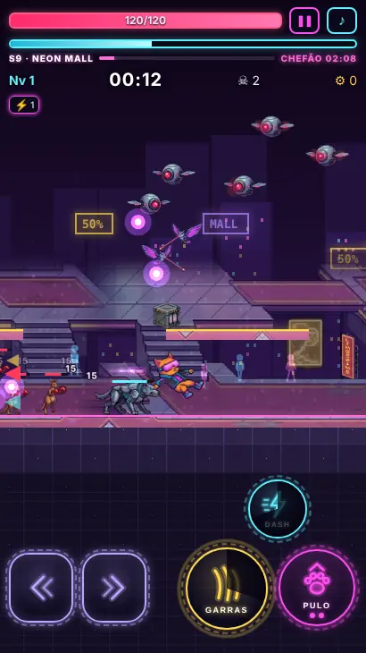
Neon Mall: vida, nível, tempo até o chefão e os botões de toque.
O jogo é em pé (retrato), feito para o celular. Você corre e pula por uma arena horizontal sem fim enquanto a horda chega pelos dois lados, em ondas cada vez maiores. A movimentação é rápida e justa, no estilo Metroidvania: pulo variável, pulo duplo, deslizar e pular na parede, dash com invencibilidade.
◀▶Andar para os lados
⤒PULO: segure para ir mais alto; no ar, pule de novo
⚡DASH: arrancada rápida, invencível por um instante
⚔ATAQUE: golpeia para onde você olha; segure para atacar sem parar
Ataque automático é opcional (Opções). Dá para mudar tamanho e transparência dos botões e usar o modo canhoto. No teclado: A/D ou ←/→ andam, Espaço pula, J ataca, Shift dá dash.
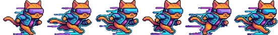
CorrerGarras para a horda
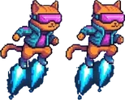
Pulo duploBotas a jato
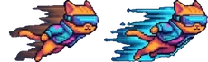
DashAtravessa o perigo
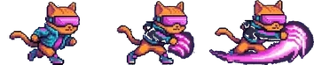
AtaqueGarras Elétricas
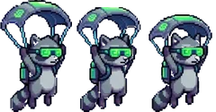
PlanarSó o Guaxinim
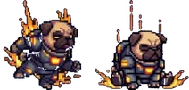
Queda pesadaSó o Pug
G Batty, level up e cartas
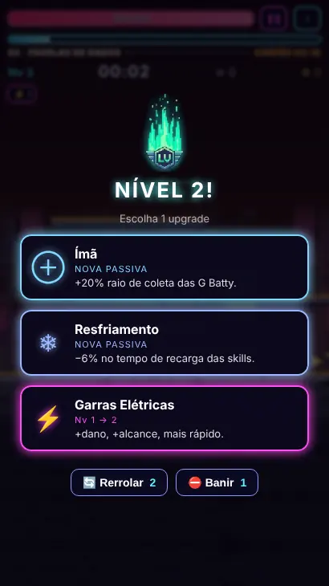
Level up: escolha 1 de 3 cartas.
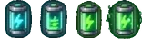
G Batty
Todo inimigo derrotado solta uma bateria de XP. Chegue perto e ela voa até você.
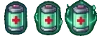
Cápsula de vida
Cai de qualquer monstro, mais fácil dos tanques e quando sua vida está baixa.
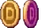
Sucata
Moeda do jogo. Gaste no Laboratório e nas armas exclusivas.
Cyber-Moedas
Vêm do check-in diário, das missões e dos chefões. Liberam personagens e o revive.
Barra de XP cheia = level up: a ação pausa e aparecem 3 cartas. Cada uma é uma skill nova ou um nível a mais numa que você já tem. Cabem 4 skills ativas + 4 passivas, cada uma até o nível 8. Dá para rerrolar as cartas 2 vezes e banir 1 carta por partida. Uma ativa no nível máximo com a passiva certa evolui para uma versão bem mais forte.
Skills ativas e evoluções
⚡
Garras Elétricas
Seu ataque básico: golpe elétrico à frente (botão ATAQUE). No nível 5 golpeia também para trás.
Nv 8 + Turbo → Garras Relâmpago: cada golpe solta raios que saltam para 3 inimigos.
✦
Shurikens de Holograma
O ATAQUE também lança shurikens que ricocheteiam nas paredes.
Nv 8 + Resfriamento → Tempestade Holográfica: +3 shurikens que ricocheteiam por muito mais tempo.
◉
Drones Orbitais
Drones giram ao seu redor e ferem quem encostar.
Nv 8 + Ímã → Enxame Magnético: 7 drones em órbita maior; ímã 50% mais forte.
♨
Rastro de Fogo
O dash deixa um rastro de fogo cibernético.
Nv 8 + Blindagem → Inferno Neon: fogo mais largo e forte, que queima também enquanto você corre.
↯
Raio em Cadeia
Automático: um raio atinge o inimigo mais próximo e salta para outros.
Nv 8 + Amplificador → Tempestade Elétrica: dois raios por vez, até 10 saltos sem perder força.
⊛
Campo Tesla
Automático: campo elétrico em volta dá choque em quem chegar perto.
Nv 8 + Vampirismo Digital → Bobina Vampira: campo 40% maior e cada choque recupera vida.
☾
Bumerangue de Plasma
Automático: vai e volta atravessando a horda.
Nv 8 + Dash Duplo → Bumerangue Duplo: para os dois lados, +2, e cada dash lança um.
Skills passivas
⊕
Ímã
+20% de raio de coleta das G Batty
♥
Blindagem
+10% de vida máxima (e cura esse valor)
»
Turbo
+5% de velocidade e de dash
❄
Resfriamento
−6% no tempo de recarga das skills
❣
Vampirismo Digital
cada abate recupera 0,3% da vida por nível
◎
Amplificador
+8% no tamanho de golpes, campos, raios e bumerangues
⇉
Dash Duplo
2ª carga de dash; depois, −6% na recarga
Protocolo de Backup (revive)
5
Sua vida zerou? O jogo pausa e começa uma contagem de 5 segundos. Assista a um anúncio ou pague ◆ 50 Cyber-Moedas e volte com 50% da vida, 3 s de invencibilidade e uma explosão que empurra para longe todos os inimigos da tela. Só 1 revive por partida.
Armas exclusivas
Cada personagem pode ter uma arma própria, comprada e evoluída com Sucata (150 · 300 · 500 · 800 · 1200) na tela Escolher personagem. Com a arma comprada, ele já começa a partida com ela disparando sozinha. O nível 5 dá um bônus especial.
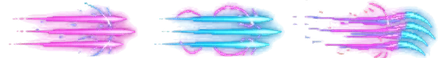
Garras Energizadas
Gato · três garras de energia avançam e atravessam a horda.
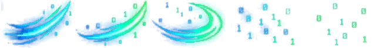
Corte de Dados
Guaxinim · corte dos dois lados; quem é atingido trava com glitch.
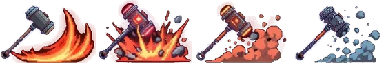
Martelo de Impacto
Pug · pancada pesada à frente e onda de choque pelo chão.
Esconderijo: Laboratório e talentos
Entre as partidas, a Sucata compra upgrades permanentes no Laboratório (níveis 1 a 5, valem para todos os personagens):
♥Chassi Reforçado+10% de vida máxima por nível
»Propulsores+4% de velocidade e +6% de dash por nível
⚡Sobrecarga de Núcleo+8% de dano por nível
⊕Módulo Magnético+15% de raio de coleta por nível
✦Sorte Algorítmica+6% de chance de carta RARA por nível
✸Ataque Crítico+5% de chance de crítico (dano ×1,8 a ×2,2) por nível
Além disso, cada personagem ganha XP permanente ao fim de toda partida e sobe até o nível 30. Cada nível dá 1 ponto de talento numa árvore de 3 ramos (o último talento de cada ramo pede 6 pontos no ramo; redistribuir é grátis):
ATAQUE
Força: +3% de dano (5 níveis)
Precisão: +2% de crítico (3)
Ritmo: −3% de recarga (3)
Carrasco: +25% de dano em elites e chefes
DEFESA
Couraça: +4% de vida (5)
Resistência: −3% de dano recebido (3)
Nanorreparo: cura 1% a cada 8 s (3)
Escudo de Fase: bloqueia 1 golpe por fase
MOBILIDADE
Passos Leves: +2% de velocidade (5)
Coletor: +8% de coleta (3)
Fôlego: −5% de recarga do dash (3)
Sorte Grande: +1 rerrolagem por partida
Também há check-in de 7 dias (◆ 10 a ◆ 80) e 3 missões diárias que dão Cyber-Moedas.
Modos de jogo
Dois jeitos de atravessar a cidade
∞ Infinito
Setor atrás de setor até cair. Sobreviva o máximo e entre no ranking global de tempo.
Cada setor é um cenário inteiro, com horda própria.
O chefão chega depois de 2:30 no setor 1 e 2:20 nos seguintes (contagem no topo da tela).
Venceu? Abre um portal na cor do próximo cenário: ao entrar, você recupera +25% de vida e fica 2 s invencível.
Cada setor deixa a horda mais forte. Depois do 13º, a cidade recomeça no Ciclo 2, com chefões ainda mais resistentes.
Seu nível e suas skills seguem com você de setor em setor.
▶ Jornada
Mapas em sequência, praticamente sem fim. Cada mapa = 1 cenário, com 4 fases + chefe (uns 6 a 8 minutos). O mapa 1 é sempre o Distrito; depois, a cada ciclo de 13 os cenários vêm embaralhados, iguais para todo mundo.
⏱ SOBREVIVA60 s, +10 s por fase
☠ DERROTE32 inimigos, +9 por fase
➜ CHEGUE À SAÍDAcorra até o portal
★ CAÇADA DE ELITE3 a 6 elites com vida ×4 (mapa 2+)
🔋 COLETE G BATTY40 baterias, +8 por fase (mapa 2+)
⚠ CHEFEa fase final: o chefe surge em 5 s
Modificador do mapa (a partir do mapa 2, um por mapa):
🐀ENXAME · Muito mais inimigos, mais frágeis
🛡BLINDADOS · Inimigos +50% vida · +60% Sucata
🔥FÚRIA · Inimigos +40% dano · +30% XP
⚡SOBRECARGA · Suas skills recarregam 20% mais rápido · inimigos +20% vida
★★★ por mapa: vencer · sem usar o revive · terminar com 50% de vida ou mais. Cada estrela nova vale ◆ 2.
Expedição: venceu o mapa? Siga para o próximo mantendo nível, skills e armas, com +35% de vida. Quanto mais forte você chega, mais forte a horda fica.
Recompensas: chefe ◆ 5 (◆ 1 se o mapa já foi vencido), vitória +Sucata (30 + 8 por mapa) e ◆ 5 na primeira vez.
As cartas valem para o mapa inteiro. O botão 🗺 MAPAS mostra o caminho, as estrelas e deixa repetir mapas vencidos.
Personagens
O bando Neko G
Todos pulam, dão pulo duplo, deslizam e pulam na parede e dão dash. Cada um tem um traço de movimento, um ataque básico e atributos próprios. O Gato é grátis; os outros são liberados com Cyber-Moedas.
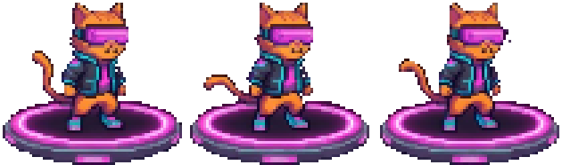
GATO
O mais rápido do bando: botas a jato e garras elétricas.
Traço2 pulos no ar
Ataque⚡ Garras Elétricas
SubmersoNa água: braçada 18% mais forte.
Arma exclusivaGarras Energizadas Três garras de energia avançam e atravessam a horda. Nv 5: lança para frente e para trás.
Vida100%
Dano100%
Alcance100%
Velocidade100%
Ímã100%
GRÁTIS · INICIAL
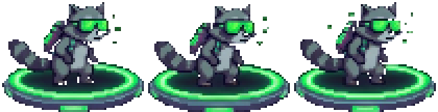
GUAXINIM
O hacker do grupo: plana de paraquedas e solta drones.
TraçoPlana: segure PULO caindo
Ataque⌁ Lâmina Hacker
Começa comDrones Orbitais
SubmersoNa água: segure PULO para flutuar parado.
Arma exclusivaCorte de Dados Corte dos dois lados; quem é atingido trava com glitch. Nv 5: corte maior e glitch mais longo.
Vida90%
Dano90%
Alcance110%
Velocidade100%
Ímã130%
◆ 120 Cyber-Moedas
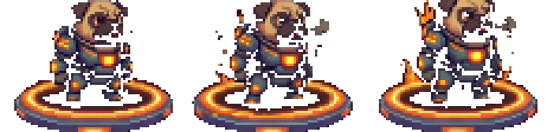
PUG
A muralha: armadura pesada e soco de energia.
TraçoQueda pesada: DASH no ar vira mergulho com onda de choque · +30% de vida
Ataque✊ Soco de Energia
SubmersoNa água: afunda mais rápido e a queda vira Âncora.
Arma exclusivaMartelo de Impacto Pancada pesada à frente e onda de choque pelo chão. Nv 5: uma segunda onda de choque.
Vida130%
Dano135%
Alcance85%
Velocidade91%
Ímã100%
◆ 160 Cyber-Moedas
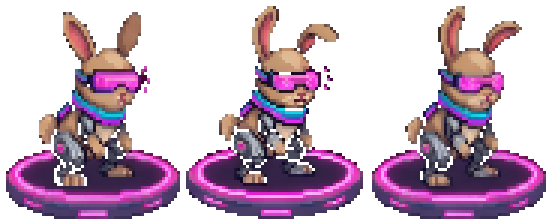
COELHO
Pernas biônicas: ninguém pula mais alto.
Traço3 pulos no ar · pulo mais alto · um pouco mais rápido
Ataque☾ Chute Meia-Lua
Arma exclusivaem desenvolvimento
Vida85%
Dano95%
Alcance110%
Velocidade104%
Ímã100%
◆ 200 Cyber-Moedas
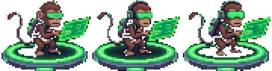
MACACO
Joga dados de código como arma.
TraçoArremessa dados: já começa com Shurikens
Ataque⌨ Soco Hacker
Começa comShurikens de Holograma
Arma exclusivaem desenvolvimento
Vida90%
Dano80%
Alcance85%
Velocidade104%
Ímã115%
◆ 220 Cyber-Moedas
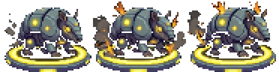
TATU
Vira bola blindada e atropela a horda.
TraçoTanque: o dash vira bola blindada que atropela · +40% de vida
Ataque⛏ Garra Blindada
Arma exclusivaem desenvolvimento
Vida140%
Dano120%
Alcance90%
Velocidade87%
Ímã100%
◆ 260 Cyber-Moedas
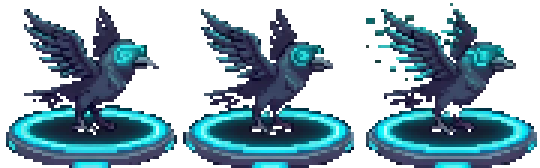
CORVO EM BREVE
Vigia a cidade do alto.
TraçoVoo curto
Bate asas no ar e ataca de cima. Chega numa próxima atualização.
Valores da fase de testes; podem mudar até o lançamento. Barras em relação ao Gato (100%).
Bestiário
A horda cibernética
Todo ataque tem aviso (pisca, brilha, abaixa ou abre a boca) antes de acontecer. Cada cenário tem sua horda: no começo só fracos, depois entram médios e tanques. Toque num cenário para filtrar.
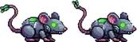
Cyber-Rato
FRACO · ♥ 14 · ✸ 5
Corre rápido pelas plataformas e pula atrás de você. Frágil, mas vem em bando.
Distrito NeonCyber-CoastFavelas de DadosData SubwayThe Cage
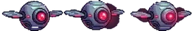
Drone Olho
FRACO · VOA · ♥ 12 · ✸ 4
Voa ondulando direto até você e fere ao encostar.
Distrito NeonPorto AutomatizadoFábrica de RobôsNeon MallCyber CasinoTorre Corporativa
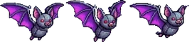
Morcego Cibernético
FRACO · VOA · ♥ 10 · ✸ 4
Voa por cima, para no ar por um instante e dá um mergulho rasante.
Distrito NeonPorto AutomatizadoData SubwayCyber Casino
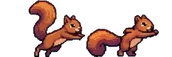
Esquilo Bombardeiro
FRACO · ♥ 16 · ✸ 6
Mantém distância e arremessa bolotas explosivas em arco. Ergue a bolota antes de jogar.
Favelas de DadosNeon MallThe Cage
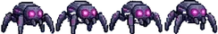
Aranha-Drone
FRACO · ♥ 12 · ✸ 5
Desce do alto num fio de neon, balançando; ao tocar o chão vira corredora.
Fábrica de RobôsData SubwayGeneLabTorre Corporativa
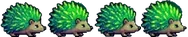
Ouriço Neon
FRACO · ♥ 16 · ✸ 5
Enrola, rola rápido (ricocheteia na parede) e solta 6 espinhos ao parar.
Cyber DeepThe CageGlow Jungle
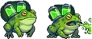
Sapo Ácido
FRACO · ♥ 16 · ✸ 5
Só anda pulando; de longe, cospe ácido em arco.
GeneLabGlow Jungle
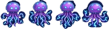
Medusa Elétrica
FRACO · VOA · ♥ 14 · ✸ 5
Nada no ar em impulsos; de perto, dá um choque em volta.
Cyber-CoastCyber DeepGeneLab
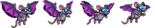
Rato-Asa Bombardeiro
FRACO · VOA · ♥ 12 · ✸ 6
Voa por cima de você e solta bombas.
Favelas de DadosFábrica de RobôsData SubwayCyber Casino
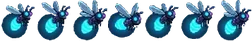
Vaga-lume Bomba
FRACO · VOA · ♥ 8 · ✸ 12
Voa tremido até você, pisca e explode. Não fere por contato: fuja da explosão.
Glow JungleTorre Corporativa
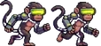
Macaco Hacker
FRACO · ♥ 16 · ✸ 6
Arremessador, como o Esquilo: guarda distância e joga projéteis em arco.
Favelas de DadosNeon MallCyber Casino
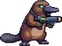
Ornitorrinco Atirador
FRACO · ♥ 18 · ✸ 6
Para, carrega a arma e atira um raio ciano reto.
Cyber-CoastPorto Automatizado
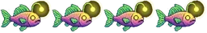
Peixe-Lanterna Glitch
FRACO · VOA · ♥ 14 · ✸ 5
Cardume do Cyber Deep: fica a uns 110 px de você e cospe uma bola de luz.
Cyber Deep
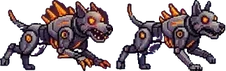
Scrap-Hound
MÉDIO · ♥ 45 · ✸ 10
Cachorro de sucata: abaixa, avisa e dá uma investida curta em linha reta.
Distrito NeonCyber-CoastFavelas de DadosData SubwayThe Cage
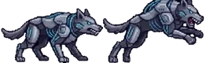
Cyber-Lobo
MÉDIO · ♥ 55 · ✸ 11
Mais rápido que o Hound; persegue e faz investidas pelo chão.
Neon MallCyber CasinoTorre Corporativa
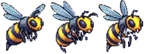
Vespa Zangão
MÉDIO · VOA · ♥ 30 · ✸ 9
Voa em zigue-zague, brilha e dá uma investida rápida com o ferrão.
GeneLabCyber CasinoGlow Jungle
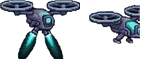
Drone Voador
MÉDIO · VOA · ♥ 28 · ✸ 8
Fica de lado, a média distância, mira e dispara um laser.
Porto AutomatizadoFábrica de RobôsTorre Corporativa
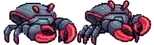
Caranguejo Blindado
MÉDIO · ♥ 50 · ✸ 9
Chega perto, levanta as pinças e belisca. Quase não é empurrado.
Cyber-CoastPorto AutomatizadoCyber Deep
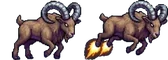
Bode-Foguete
MÉDIO · ♥ 45 · ✸ 10
Agacha, salta com foguetes num arco e cai com um pisão.
Favelas de DadosThe Cage
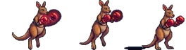
Canguru Boxeador
MÉDIO · ♥ 55 · ✸ 10
Anda pulando alto; de perto, dá um soco com avanço.
Neon MallCyber CasinoThe Cage
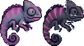
Camaleão Fantasma
MÉDIO · ♥ 40 · ✸ 10
Chega quase invisível (repare na distorção); perto, aparece e dá uma linguada.
GeneLabGlow Jungle
Coruja de Vigilância
MÉDIO · VOA · ♥ 34 · ✸ 8
Fica no alto e solta 2 mini-drones teleguiados.
Neon MallCyber CasinoTorre Corporativa
Leão-Marinho Jato
MÉDIO · VOA · ♥ 45 · ✸ 8
Voa de lado com propulsores e dispara rajadas de 3 tiros.
Porto AutomatizadoCyber DeepFábrica de RobôsTorre Corporativa
Alce de Plasma
MÉDIO · ♥ 60 · ✸ 11
Os chifres brilham e ele faz uma investida forte.
Glow Jungle
Texugo Voltaico
MÉDIO · ♥ 45 · ✸ 10
Investida rápida soltando faíscas pelo caminho.
Fábrica de RobôsData Subway
Tubarão-Torpedo
MÉDIO · VOA · ♥ 60 · ✸ 12
Ronda em ondas ao seu lado, abre a boca (aviso) e dá um bote rápido em linha reta.
Cyber Deep
Cyber-Lula
MÉDIO · VOA · ♥ 48 · ✸ 9
Nada em jatos, se alinha na sua altura e solta um raio horizontal. Linha rosa piscando = sai da frente.
Cyber Deep
Urso Cibernético
TANQUE · ♥ 220 · ✸ 16
Lento e muito resistente: avança sem parar e quase não sente empurrão.
Distrito NeonFavelas de DadosGeneLabTorre Corporativa
Panda de Guerra
TANQUE · ♥ 260 · ✸ 15
Para, o braço-canhão brilha e ele dispara um tiro de plasma.
Porto AutomatizadoFábrica de RobôsNeon MallTorre Corporativa
Gorila de Aço
TANQUE · ♥ 240 · ✸ 16
Pancada no chão: anel de impacto e ondas que correm pelo chão. Pule!
GeneLabCyber CasinoThe CageGlow Jungle
Crocodilo Mecânico
TANQUE · ♥ 220 · ✸ 15
Rasteiro e blindado; abre a boca e dá uma mordida com avanço.
Investida longa em linha reta; para ao bater na parede.
Cyber CasinoThe Cage
Rinoceronte Fornalha
TANQUE · ♥ 320 · ✸ 18
Investida ainda mais longa, e quase nada o empurra.
Fábrica de RobôsThe CageTorre Corporativa
Querubim-Tubarão
MINI-CHEFE · VOA · ♥ 380 · ✸ 16
Mini-chefe do Cyber Deep: aparece uma vez no meio do setor, ronda, abre a boca e dá um bote que morde.
Cyber Deep
♥ vida base · ✸ dano base. A horda ganha vida e dano conforme o setor avança.
Chefões
Um chefão guarda cada setor (no Infinito) e cada mapa (na Jornada), na ordem Polvo → Quimera → Glitch → T-Rex → Titã → Rainha → Sentinela. Tem barra de vida no topo, fases que mudam o ritmo e golpes sempre avisados. Não sofre empurrão nem atordoamento. Derrotado, garante level up, Sucata, cápsula de vida grande e ◆ 5 Cyber-Moedas.
POLVO DE NEON
♥ 900 de vida base · VOA
Leque de orbes (mais orbes a cada fase)
Mergulho em você, e fica baixo e exposto por 1,3 s: hora de bater
Chama morcegos
Giro: anel de orbes em volta
Fase 3: chuva de tinta caindo do teto
QUIMERA CIBERNÉTICA
♥ 2600 de vida base
3 fases marcadas pela cor: dourado → verde → ciano, mais rápida a cada uma
Garrada de perto e bote com ondas de choque ao cair
Cauda: orbes em arco; chicote da cauda atrás dela
Rugido que empurra você (na fase 3 chama 2 Scrap-Hounds)
Investida e botes em sequência
O GRANDE GLITCH
♥ 3200 de vida base · VOA
Laser magenta que varre a tela (linha de aviso piscando antes)
Cubos de glitch em leque
Teleporte para o outro lado (fase 2+)
Rasante que atravessa você em arco
Fase 3: chuva de cubos
T-REX CIBERNÉTICO
♥ 5500 de vida base
Pisão com ondas de choque pelo chão: pule!
Mordida de perto; rabada se você ficar nas costas dele
Fase 2 (visor vermelho, abaixo de 50%): pisão duplo, investida e 3 lasers
Pedras caindo do teto no pisão da fase 2
TITÃ SOBRECARREGADO
♥ 4200 de vida base
Salto esmagador na sua direção, com ondas de choque para os dois lados
Fase 2+: chuva de orbes depois do salto
Soco de perto
Anel de orbes disparado do núcleo
A RAINHA DA SUCATA
♥ 3000 de vida base · VOA
Paira acima e de lado
Investida reta na sua altura (fase 2+: solta um anel de sucata ao parar)
Leque de orbes
Chuva de sucata
O SENTINELA DE DADOS
♥ 3400 de vida base · VOA
Some num glitch e reaparece em cima de você
Mergulho esmagador com ondas de dados
Anel de cubos
Leque de orbes
Chefões do Cyber Deep
No setor submerso, o guardião é a versão aquática de um chefão (um dos dois é sorteado por partida).
MECHA-POVOADOR
♥ 2000 de vida base · SETOR SUBMERSO
Variação aquática do Polvo: um escafandro gigante no fundo
Tentáculo no chão com ondas elétricas dos dois lados
Canhão da cabeça em leque; anel de choque (fase 2+)
Salto pesado que solta ondas (na fase 3 derruba destroços)
O GRANDE GLITCH (SERPENTE)
♥ 1800 de vida base · VOA · SETOR SUBMERSO
Variação aquática do Dragão: nada em ondas
Sopro de plasma que varre
Travessia rápida na sua altura
Anel de bolhas elétricas e cardume de Peixes-Lanterna (fase 2+)
Cenários
13 setores até o topo da cidade
01
DISTRITO NEON
Onde tudo começa
Prédios cobertos de letreiros, chuva fina e telhados de grade. É o bairro de origem do bando e o primeiro setor de toda partida.
Contêineres, guindastes, esteiras e semáforos de carga que trabalham sozinhos, dia e noite.
Horda: Ornitorrinco Atirador · Drone Olho · Morcego Cibernético · Caranguejo Blindado · Leão-Marinho Jato · Drone Voador · Panda de Guerra · Crocodilo Mecânico
05
CYBER DEEP
Abismo cibernético
Setor submerso: aqui não se pula, se nada. PULO vira braçada e DASH vira torpedo. Recifes de fibra óptica, anêmonas balançando e um letreiro que pisca no fundo.
Escritórios de vidro e hologramas corporativos no 100º andar. Fim do caminho e origem do sinal.
Horda: Drone Olho · Vaga-lume Bomba · Aranha-Drone · Coruja de Vigilância · Drone Voador · Cyber-Lobo · Leão-Marinho Jato · Panda de Guerra · Rinoceronte Fornalha · Urso Cibernético
Imagens capturadas do jogo (versão 0.22 teste).
Baixar e testar
Fase de testes · Android
O Neko G está em fase de testes: o jogo muda quase todo dia e sua opinião decide o que vem a seguir. O APK de teste sai automaticamente do GitHub a cada atualização.
Entre (ou crie uma conta grátis) no GitHub. Sem conta, o GitHub não libera o download.
Abra a página APK Android (teste), toque na execução mais recente (no topo, com ✓ verde).
Em Artifacts, baixe neko-g-apk-<número>. Vem um .zip: abra e extraia o arquivo .apk.
Toque no .apk e permita instalar apps de fontes desconhecidas quando o Android pedir.
Jogue! Depois, conte o que achou pelo botão 💬 Feedback do jogo.